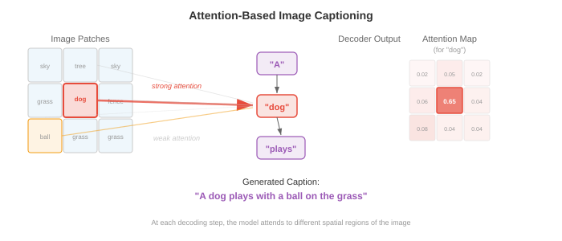
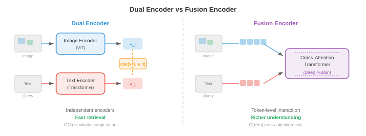

Vision Language Models¶
Vision language models jointly understand images and text, enabling visual question answering, image captioning, and visual reasoning. This file covers VQA, image captioning, visual grounding, and architectures like VisualBERT, BLIP, LLaVA, Flamingo, PaLI, and Qwen-VL that fuse vision encoders with large language models.
-
Think of a museum guide who can look at a painting and articulate everything about it: what objects are present, what story it tells, what emotions it conveys, and answer any question a visitor might pose. A vision language model (VLM) is the computational equivalent — a system that jointly understands images and text, enabling it to describe visual scenes, answer questions about them, follow visual instructions, and even locate specific objects within an image given a natural language query.
-
VLMs sit at the intersection of the vision encoders you met in Chapter 8 and the language models from Chapter 7. The central engineering challenge is bridging two very different representational worlds: the spatial, continuous feature maps of a vision backbone and the sequential, discrete token embeddings of a language model. Every architecture in this file is, at its core, a different answer to the question: how do you fuse vision and language?

Visual Question Answering¶
-
Imagine someone shows you a photograph and asks "How many dogs are in the park?" You effortlessly parse the image, locate the dogs, count them, and produce an answer. Visual question answering (VQA) formalises this: given an image \(I\) and a natural language question \(q\), predict the answer \(a\).
-
The task can be framed in several ways. The most common treats VQA as open-ended classification: the model selects from a fixed vocabulary of the most frequent answers (e.g., the top 3,129 answers in VQA v2). Alternatively, it can be treated as generative answering, where the model produces a free-form text string — this is the approach modern VLMs use.
-
Formally, you want to learn a function \(f(I, q) \to a\) that maximises the likelihood of the correct answer. In the classification setup, this becomes:
-
where \(v\) is a visual feature vector (from a CNN or ViT), \(h\) is a question encoding (from an LSTM or Transformer), and \(g\) is a fusion function that combines them. The design of \(g\) is where the real architectural creativity lies.
-
VQA v1 (Antol et al., 2015) introduced the benchmark with 614,000 questions on 204,000 images from MS COCO. Researchers quickly discovered that models could achieve surprisingly high accuracy by exploiting language priors — answering "2" for "how many" questions or "yes" for "is there" questions without even looking at the image.
-
VQA v2 (Goyal et al., 2017) addressed this by pairing each question with two similar images that yield different answers. This forced models to actually ground their reasoning in visual content. The balanced pair setup roughly doubles the dataset and makes language-only shortcuts much less effective.
-
Other important VQA datasets include GQA (Hudson & Manning, 2019) with compositional questions requiring multi-step reasoning, OK-VQA (Marino et al., 2019) requiring outside knowledge beyond the image, and TextVQA (Singh et al., 2019) where the answer depends on reading text within the image.

-
Early VQA models used a simple strategy: extract image features from a pre-trained CNN (typically the penultimate layer of ResNet or VGGNet from Chapter 8), encode the question with an LSTM (Chapter 6), and combine them. The combination function \(g\) evolved rapidly: from simple element-wise multiplication, to bilinear pooling, to multi-modal Tucker decomposition. Bilinear attention computes \(v^T W h\), where \(W\) is a learnable interaction matrix, but the full bilinear form has \(O(d_v \times d_h)\) parameters, which is prohibitively large. MLB (multimodal low-rank bilinear pooling) factorises this into two low-rank projections, making it tractable.
-
The breakthrough for VQA was attention. Stacked Attention Networks (Yang et al., 2016) used the question encoding to attend over spatial image regions, iteratively refining which parts of the image to focus on. This idea — letting the question "look at" relevant image regions — became standard.
Image Captioning¶
-
Picture a friend looking at your holiday photos and narrating what they see: "A golden retriever is catching a frisbee on a sunny beach." Image captioning is the task of generating a natural language description of an image. Unlike VQA, there is no question — the model must decide what is worth describing on its own.
-
Show and Tell (Vinyals et al., 2015) established the canonical encoder-decoder architecture for captioning. A CNN encoder (e.g., Inception or ResNet) produces a single image feature vector \(v\). This vector is used as the initial hidden state of an LSTM decoder, which then generates a caption word by word, autoregressively:
-
The entire model is trained end-to-end by maximising the log-likelihood of ground-truth captions. At inference time, beam search (Chapter 7) is used to find high-probability captions.
-
The problem with Show and Tell is that the entire image is compressed into a single vector. For complex scenes, a single vector cannot capture all the relevant details. You lose spatial information — the model cannot "look back" at specific parts of the image while generating different words.
-
Show, Attend and Tell (Xu et al., 2015) solved this by introducing attention over image regions. Instead of encoding the image as one vector, the CNN produces a spatial feature grid (e.g., \(14 \times 14 \times 512\) from the last convolutional layer of VGGNet). At each decoding step, the model computes attention weights over these spatial locations, producing a context vector that highlights the most relevant region for the current word.
-
Recall the attention mechanism from Chapter 6: the decoder hidden state acts as the query, the spatial features act as keys and values, and the attention weights tell the model where to look. The authors proposed two variants: soft attention (differentiable, weighted average of all regions) and hard attention (stochastic sampling of a single region, trained with REINFORCE).

-
The attention maps produced by these models are remarkably interpretable: when generating "dog," the attention peaks over the dog region; when generating "beach," it shifts to the sand and water. This was one of the first compelling demonstrations that attention provides built-in interpretability.
-
CIDEr (Vedantam et al., 2015), METEOR, BLEU, and SPICE are the standard captioning evaluation metrics. CIDEr computes TF-IDF weighted n-gram similarity between generated and reference captions, specifically designed for captioning evaluation. Modern VLMs are typically evaluated on CIDEr for captioning benchmarks like MS COCO Captions and NoCaps.
-
Later captioning models incorporated bottom-up attention (Anderson et al., 2018), where an object detector (Faster R-CNN, Chapter 8) first proposes salient image regions, and the captioning model attends over these region features rather than a uniform grid. This was the dominant approach before ViT-based encoders took over.
Architecture Patterns¶
- Every VLM must answer a fundamental design question: at what point do vision and language interact? The answer defines the model's architecture family. There are three primary patterns, each with distinct trade-offs.
Dual Encoder¶
-
Imagine two translators working independently — one reads a French document, the other reads an English document — and they each produce a summary in a shared "universal language." They never communicate during translation, but their summaries are directly comparable. This is the dual encoder pattern.
-
A vision encoder \(f_v\) and a text encoder \(f_t\) independently map their respective inputs to a shared embedding space of dimension \(d\). The image embedding is \(v = f_v(I) \in \mathbb{R}^d\) and the text embedding is \(t = f_t(q) \in \mathbb{R}^d\). Similarity is computed via a dot product or cosine similarity: \(\text{sim}(I, q) = v^T t / (\|v\| \|t\|)\).
-
CLIP (Radford et al., 2021), covered in the previous file on multimodal representations, is the prototypical dual encoder. It is trained with a contrastive objective (InfoNCE) on 400 million image-text pairs scraped from the internet. Because the encoders are independent, you can pre-compute and cache all image embeddings, making retrieval extremely efficient — you only need to encode the query text at search time.
-
The dual encoder's weakness is that vision and language never interact at the feature level. The model cannot perform fine-grained cross-modal reasoning: it cannot, for example, determine whether a specific word in the caption corresponds to a specific region in the image. This limits its usefulness for tasks like VQA or grounded captioning.
Fusion Encoder¶
-
Now imagine the two translators are in the same room, actively discussing both documents. They can point at specific passages, ask each other questions, and build a joint understanding. This is the fusion encoder pattern.
-
Both modalities are encoded and then fused through cross-attention layers where tokens from one modality attend to tokens from the other. The image is first processed by a vision encoder into a sequence of patch or region tokens \(V = [v_1, \ldots, v_N]\). The text is tokenised into \(T = [t_1, \ldots, t_M]\). In the fusion layers, text tokens attend to image tokens via cross-attention:
- This enables fine-grained interaction: each text token can attend to the specific image regions it needs. Models like VisualBERT, VilBERT, and UNITER use this pattern. The cost is that you cannot pre-compute separate embeddings for retrieval — every image-text pair requires a full forward pass through the fusion layers.

Encoder-Decoder¶
-
The encoder-decoder pattern combines the vision encoder with a text decoder that generates output tokens autoregressively, similar to the seq2seq models from Chapter 7. The vision encoder produces contextual image representations, and the text decoder cross-attends to them while generating output text.
-
This pattern naturally supports generative tasks: captioning, VQA with free-form answers, and visual dialogue. Models like GIT (Generative Image-to-text Transformer, Wang et al., 2022), CoCa (Contrastive Captioner, Yu et al., 2022), and PaLI use this architecture. CoCa cleverly combines the dual encoder and encoder-decoder patterns: the first half of the text decoder layers operate as a unimodal text encoder (for contrastive learning), while the second half cross-attend to image features (for generative captioning), getting the best of both worlds.
-
The choice among these three patterns depends on the target task. Dual encoders are optimal for retrieval at scale. Fusion encoders are best for fine-grained understanding tasks. Encoder-decoders are most versatile for generative tasks. Modern state-of-the-art VLMs increasingly adopt the encoder-decoder or decoder-only paradigm, treating every vision-language task as text generation.
Flamingo: Few-Shot Multimodal Learning¶
-
Think of a seasoned expert who, after years of studying both art and literature, can look at a completely new painting style and describe it eloquently after seeing just one or two examples. Flamingo (Alonso et al., 2022, DeepMind) is built on the same principle: it leverages a powerful pre-trained language model and a pre-trained vision encoder, connecting them with lightweight architectural components that enable few-shot learning on multimodal tasks.
-
Flamingo's design philosophy is conservative and effective: keep the pre-trained vision encoder (NFNet) and language model (Chinchilla) frozen, and learn only the "glue" that connects them. This glue consists of two components: a Perceiver Resampler and gated cross-attention layers.
-
The Perceiver Resampler takes the variable-length output of the vision encoder (which depends on image resolution) and compresses it into a fixed set of \(N\) visual tokens (typically \(N = 64\)). It works by initialising a set of \(N\) learnable query vectors and using cross-attention to let these queries attend to the full set of vision encoder outputs. This is essentially the Perceiver architecture (Jaegle et al., 2021) applied as a bottleneck — it produces a compact, fixed-size visual representation regardless of the input image size.
- The gated cross-attention layers are interleaved between the frozen language model layers. At each such layer, the language model's text tokens cross-attend to the visual tokens produced by the Perceiver Resampler. Critically, each gated cross-attention layer includes a learnable scalar gate \(\alpha\), initialised to zero, that multiplies the cross-attention output before adding it to the residual stream:
- Initialising \(\alpha = 0\) means that at the start of training, the cross-attention contributes nothing, and the model behaves exactly like the original frozen language model. The gates gradually open during training, smoothly integrating visual information without disrupting the language model's pre-trained representations.

-
Flamingo natively handles interleaved image-text sequences. You can feed it a prompt containing multiple images interspersed with text, such as: "[Image 1] This is a cat. [Image 2] This is a dog. [Image 3] This is a ___." The model processes each image through the vision encoder and Perceiver Resampler, and the resulting visual tokens are inserted at the corresponding positions in the text sequence. The language model's causal attention mask ensures that each text token can only attend to visual tokens from the current and preceding images.
-
This interleaving enables powerful few-shot multimodal learning. By providing a few image-text examples in context, Flamingo can perform new tasks without any gradient updates. On benchmarks like VQAv2, OK-VQA, and captioning, Flamingo with 80B parameters achieved state-of-the-art few-shot performance, often matching or exceeding fine-tuned specialist models with just 4 or 32 examples.
LLaVA and Visual Instruction Tuning¶
-
Imagine you have a brilliant language expert (an LLM) and a brilliant art critic (a vision encoder). If you could teach the art critic to "speak the language expert's language," they could collaborate seamlessly. LLaVA (Large Language and Vision Assistant, Liu et al., 2023) does exactly this: it projects vision features into the LLM's token embedding space using a simple linear layer, then fine-tunes the whole system on instruction-following data.
-
LLaVA's architecture is strikingly simple. An image is encoded by a pre-trained CLIP ViT-L/14 vision encoder into a grid of patch features \(V \in \mathbb{R}^{N \times d_v}\), where \(N = 256\) patches (for 336px images with 14px patches). A projection layer \(W\) maps these vision features into the LLM's embedding dimension:
- The projected visual tokens \(H_v\) are simply concatenated with the text token embeddings and fed into the LLM (Vicuna, a fine-tuned LLaMA) as a single sequence. The LLM processes them with its standard causal self-attention — no special cross-attention layers, no perceiver, just concatenation. The visual tokens are treated as if they were text tokens that happen to encode visual information.

-
Visual instruction tuning is LLaVA's key training innovation. The authors used GPT-4 to generate 158,000 multimodal instruction-following examples from COCO images. Each example consists of an image paired with a conversational instruction (e.g., "Describe this image in detail," "What is unusual about this image?," "If I were a tourist visiting this place, what should I know?"). The model is trained to generate the GPT-4-authored response given the image and instruction.
-
Training proceeds in two stages. Stage 1 (pre-training): only the projection layer \(W\) is trained on image-caption pairs (595K from CC3M), while both the vision encoder and LLM are frozen. This teaches \(W\) to align visual features with the LLM's embedding space. Stage 2 (fine-tuning): the projection layer and the LLM are jointly fine-tuned on the instruction-following data, while the vision encoder stays frozen. This teaches the model to follow complex visual instructions.
-
LLaVA-1.5 improved the original with three key changes: replacing the single linear projection with a two-layer MLP (more expressive mapping), using higher-resolution images (336px instead of 224px, producing more patch tokens), and adding academic VQA datasets to the training mix. These seemingly minor modifications produced a large jump in benchmark performance.
-
The LLaVA approach demonstrated that you do not need complex architectural innovations like Flamingo's Perceiver Resampler or gated cross-attention. A simple linear projection, combined with high-quality instruction-tuning data, is enough to connect a vision encoder to an LLM effectively. This simplicity made LLaVA extremely influential — most subsequent open-source VLMs follow a similar recipe.
Scaling Vision-Language Models¶
- The field moved rapidly from proof-of-concept VLMs to industrial-scale systems trained on billions of image-text pairs. Three model families illustrate different approaches to scaling.
PaLI¶
-
PaLI (Pathways Language and Image model, Chen et al., 2022, Google) scales both the vision encoder and the language model simultaneously. PaLI uses a ViT-e (4B parameters) as the vision encoder and mT5 (13B parameters) as the language model, for a total of 17B parameters. The image is encoded into a sequence of patch tokens, which are prepended to the text tokens and fed into the encoder-decoder mT5.
-
PaLI's key insight is that scaling the vision encoder matters as much as scaling the language model. Previous work typically used a fixed, moderate-sized vision backbone (e.g., ViT-B or ViT-L) and poured all the parameter budget into the LLM. PaLI showed that a 4B-parameter ViT-e, pre-trained on JFT-4B (4 billion labelled images), dramatically improves performance on fine-grained visual tasks like OCR and spatial reasoning.
-
PaLI is trained on WebLI, a dataset of 10 billion image-text pairs in 109 languages, making it inherently multilingual. The model is pre-trained with a mixture of tasks: image captioning, VQA, and image-text matching, all cast as text-to-text generation (following the T5 paradigm from Chapter 7). PaLI-X (55B parameters) and PaLI-3 (5B, using SigLIP as the vision encoder) are subsequent iterations.
Qwen-VL¶
-
Qwen-VL (Bai et al., 2023, Alibaba) builds on the Qwen LLM by adding a ViT vision encoder and a single-layer cross-attention module (similar to Flamingo's Perceiver Resampler) that compresses the vision encoder's output into a fixed set of 256 visual tokens. The visual tokens are concatenated with text tokens and processed by the Qwen LLM.
-
Qwen-VL's training uses a three-stage recipe. Stage 1: pre-train on 1.4 billion weakly-supervised image-text pairs with only the vision encoder unfrozen. Stage 2: multi-task pre-training on higher-quality data including VQA, captioning, grounding, and OCR datasets, with the full model unfrozen. Stage 3: supervised fine-tuning on instruction-following and dialogue data. This progressive refinement, from noisy web data to curated instruction data, is a pattern shared across most modern VLMs.
-
Qwen2-VL (2024) introduced dynamic resolution support: instead of resizing all images to a fixed size, it processes images at their native resolution by dynamically adjusting the number of visual tokens. Higher-resolution images produce more tokens, and lower-resolution images produce fewer. This improves performance on detail-sensitive tasks like document understanding and fine-grained recognition without wasting computation on low-resolution inputs.
InternVL¶
-
InternVL (Chen et al., 2024, Shanghai AI Lab) scales the vision encoder aggressively, using InternViT-6B — a 6-billion-parameter vision transformer — paired with a language model. The key architectural contribution is dynamic high-resolution processing: images are divided into tiles of 448x448 pixels, each processed independently by the vision encoder, and the resulting tile features are concatenated with a thumbnail feature of the full image. This allows the model to handle images of arbitrary aspect ratios and resolutions.
-
InternVL-2 further introduced progressive alignment training: first aligning the vision encoder with a contrastive objective (like CLIP), then connecting it to the LLM through a lightweight MLP connector, and finally fine-tuning end-to-end on instruction data. The progressive strategy prevents catastrophic forgetting of the vision encoder's pre-trained representations.

- A common theme across all three families is the importance of training data curation. Raw web-scraped image-text pairs are noisy and often misaligned. Successive training stages progressively filter and refine the data, moving from billions of noisy pairs to millions of high-quality instruction examples. The quality of the final fine-tuning data often matters more than the model's raw parameter count.
Grounding and Referring¶
-
Imagine pointing at a person in a crowd and saying "the woman in the red hat." You are using language to refer to a specific spatial region. Visual grounding is the reverse: given an image and a natural language expression, the model must identify (localise) the referred object. Referring expression comprehension produces a bounding box; referring expression segmentation produces a pixel mask.
-
Formally, given an image \(I\) and a referring expression \(r\) (e.g., "the large brown dog on the left"), the model predicts a bounding box \(b = (x, y, w, h)\) or a set of coordinates that localise the referent. The datasets include RefCOCO, RefCOCO+, and RefCOCOg, each containing images with multiple objects and unambiguous referring expressions for each.
-
Early grounding models used a two-stage approach: first generate region proposals (from Faster R-CNN or similar), then score each proposal against the language query using a fusion model. The highest-scoring region is the prediction. This is computationally expensive and limited by the quality of the proposals.
-
Modern VLMs integrate grounding directly into the generative framework. The key idea is to represent bounding box coordinates as text tokens. You discretise the continuous coordinate space into bins (e.g., 1000 bins for each of \(x, y, w, h\)) and add special location tokens like
<loc_342>to the vocabulary. The model then generates a bounding box by outputting a sequence of location tokens:
-
This tokenisation trick allows any autoregressive language model to perform grounding without any architectural changes — it simply learns to "speak coordinates." Pix2Seq (Chen et al., 2022) pioneered this approach for object detection, and models like Qwen-VL, Ferret, and Kosmos-2 extend it to referring expression comprehension and phrase grounding.
-
Kosmos-2 (Peng et al., 2023, Microsoft) adds grounding capability to a multimodal LLM by representing spatial locations as special tokens embedded within the generated text. For example, it can generate: "A
<phrase>golden retriever</phrase><box><loc_102><loc_215><loc_487><loc_398></box>is catching a frisbee." This interleaving of text and spatial tokens enables simultaneous captioning and grounding.

- Pointing takes grounding further: instead of bounding boxes, the model predicts a single point (typically the centre of the referred object). This is useful for interactive applications where a user asks "Where is the nearest exit?" and the model responds with a coordinate overlaid on the image. Models like Shikra and Ferret support point-based referring in addition to box-based grounding.
OCR-Free Document Understanding¶
-
Traditional document understanding pipelines are complex: first run an OCR engine to extract text and layout, then feed the extracted text into a language model. This multi-stage approach is fragile — OCR errors propagate downstream, and the spatial layout information is often lost or poorly represented. What if the model could read directly from pixels, the way you do?
-
Donut (Document Understanding Transformer, Kim et al., 2022) eliminates OCR entirely. It uses a Swin Transformer (Chapter 8) as the vision encoder to process the document image, and a BART-style Transformer decoder to generate structured text output directly from the visual features. The decoder can produce JSON, key-value pairs, or plain text, depending on the task.
-
Donut's training is two-stage. Pre-training: the model learns to read by performing synthetic OCR — given a document image, it generates the full text content. This is trained on millions of synthetic document images rendered from text corpora, teaching the vision encoder to recognise characters, fonts, and layouts. Fine-tuning: the model is adapted to specific downstream tasks like receipt parsing, form understanding, or document classification, by training it to generate task-specific structured output.
-
The Donut decoder uses a special prompting scheme: the task is specified by a prompt token (e.g.,
<doc_class>for classification or<parse_receipt>for receipt parsing), and the model generates the output conditioned on this prompt. This unified interface allows a single model to handle multiple document understanding tasks. -
Pix2Struct (Lee et al., 2023, Google) takes the OCR-free idea and applies it to web page understanding and chart/figure comprehension. The key pre-training objective is screenshot parsing: given a masked screenshot of a web page, the model generates the underlying HTML that produced the visible region. This teaches the model to understand the relationship between visual rendering and structured markup.
-
Pix2Struct introduces variable-resolution input processing: instead of resizing all images to a fixed size (which distorts aspect ratios and destroys fine text), it packs the image into a fixed number of patches while preserving the original aspect ratio. A tall, narrow document produces a tall, narrow patch grid. This is critical for document understanding, where aspect ratio carries semantic information (a receipt is narrow and tall; a spreadsheet is wide and short).

-
Nougat (Blecher et al., 2023, Meta) applies the Donut architecture specifically to academic papers, generating full LaTeX markup directly from PDF page images. It can handle complex mathematical equations, tables, and figures — tasks where traditional OCR pipelines struggle badly. The model is trained on pairs of PDF page images and their corresponding LaTeX source code.
-
The success of OCR-free models demonstrates a broader principle in deep learning: end-to-end models that learn directly from raw inputs (pixels) often outperform complex multi-stage pipelines, because they can jointly optimise all components and learn representations that are specifically tailored to the final task. The intermediate OCR step is a bottleneck that constrains what the model can learn.
The Visual Token Pipeline¶
-
Regardless of architecture family, every VLM must convert an image into a sequence of tokens that a language model can process. Understanding this pipeline is essential. The process varies by model, but the general flow is:
-
Step 1: Patch extraction. The image (height \(H\), width \(W\)) is divided into non-overlapping patches of size \(P \times P\), producing \(N = HW / P^2\) patches. For a 336x336 image with 14x14 patches, \(N = 576\).
-
Step 2: Vision encoding. Each patch is linearly projected and passed through the vision encoder (typically a ViT). The output is a sequence of contextual patch embeddings \(V = [v_1, \ldots, v_N] \in \mathbb{R}^{N \times d_v}\). These embeddings carry both local appearance information and global context (from self-attention).
-
Step 3: Token compression (optional). Some models compress the \(N\) visual tokens into a smaller set of \(M \ll N\) tokens to reduce the computational burden on the language model. Flamingo uses a Perceiver Resampler (\(M = 64\)); Qwen-VL uses cross-attention (\(M = 256\)); Q-Former (used in BLIP-2, Li et al., 2023) uses a set of \(M = 32\) learnable query tokens that cross-attend to the vision encoder's output.
-
Step 4: Projection. The visual tokens (either the full set or the compressed set) are projected into the language model's embedding space via a linear layer or MLP. After projection, visual tokens have the same dimensionality as text token embeddings and can be concatenated with them.
-
Step 5: Injection into the LLM. The projected visual tokens are inserted into the token sequence at the position of a special
<image>placeholder token, and the combined sequence is processed by the language model. The LLM's self-attention allows text tokens to attend to visual tokens and vice versa.

-
The number of visual tokens directly affects computational cost. Each visual token participates in the LLM's self-attention, which is quadratic in sequence length. A high-resolution image with many patches can produce hundreds or thousands of visual tokens, dominating the LLM's context window. This is why token compression is important: reducing 576 visual tokens to 64 cuts the visual contribution to attention by roughly 9x.
-
BLIP-2 (Li et al., 2023) is notable for its efficient bridging strategy. It introduces a lightweight Q-Former (a small Transformer with learnable queries) that sits between the frozen vision encoder and the frozen LLM. The Q-Former is the only trainable component — both the vision encoder and LLM remain frozen. It is pre-trained in two stages: first with image-text contrastive learning, matching, and captioning objectives (connecting it to the vision encoder), then with language generation objectives (connecting it to the LLM). This modular design allows BLIP-2 to plug any vision encoder into any LLM.
Training Objectives¶
-
VLMs are trained with a combination of objectives, depending on the architecture pattern:
-
Image-text contrastive loss (ITC): aligns image and text representations in a shared embedding space, as in CLIP. This is the primary objective for dual encoders and is often used as a pre-training objective for fusion models. The loss is the InfoNCE loss from the previous file.
-
Image-text matching (ITM): a binary classification objective — given an image and a text, predict whether they match. Hard negatives (text that is similar but paired with a different image) make this task challenging and force the model to learn fine-grained alignment.
-
Language modelling (LM): the standard autoregressive language modelling objective — predict the next token given all previous tokens. For VLMs, the "previous tokens" include the visual tokens, so the model learns to generate text conditioned on visual input. This is the primary objective for encoder-decoder and decoder-only VLMs.
-
Prefix language modelling: a variant where the image and a text prefix are provided as context (not trained on), and the model is trained to generate only the continuation. This is used in models like PaLI and SimVLM.
-
Most modern VLMs combine multiple objectives during pre-training (e.g., ITC + ITM + LM in BLIP, ITC + LM in CoCa) and then fine-tune with a pure LM objective on instruction data.
Coding Tasks (use CoLab or notebook)¶
-
Implement a simple attention-based image captioning decoder. Use random "image features" as the encoder output and train the decoder to generate a fixed caption, observing how the attention weights shift across spatial positions at each decoding step.
import jax import jax.numpy as jnp import matplotlib.pyplot as plt # Simulate a 4x4 spatial grid of image features (16 regions, dim=32) key = jax.random.PRNGKey(42) k1, k2, k3 = jax.random.split(key, 3) img_features = jax.random.normal(k1, (16, 32)) # 16 spatial regions, 32-dim # Vocabulary: 0=<start>, 1="a", 2="red", 3="car", 4=<end> vocab_size, embed_dim, hidden_dim = 5, 16, 32 W_embed = jax.random.normal(k2, (vocab_size, embed_dim)) * 0.1 W_attn_q = jax.random.normal(k3, (hidden_dim, 32)) * 0.1 # query projection def attend(h, img_feats, W_q): """Compute soft attention over image features given decoder state h.""" query = h @ W_q # (32,) scores = img_feats @ query # (16,) weights = jax.nn.softmax(scores) # (16,) context = weights @ img_feats # (32,) return context, weights # Simple GRU-like step (for illustration, just a linear + tanh) W_h = jax.random.normal(jax.random.PRNGKey(0), (embed_dim + 32, hidden_dim)) * 0.1 def decode_step(h, word_idx, img_feats): context, attn_weights = attend(h, img_feats, W_attn_q) word_emb = W_embed[word_idx] # (16,) inp = jnp.concatenate([word_emb, context]) # (48,) h_new = jnp.tanh(inp @ W_h) # (32,) return h_new, attn_weights # Run decoding for the sequence: <start> -> "a" -> "red" -> "car" -> <end> target_seq = [0, 1, 2, 3, 4] h = jnp.zeros(hidden_dim) all_attn = [] for word_idx in target_seq[:-1]: h, attn_w = decode_step(h, word_idx, img_features) all_attn.append(attn_w) # Visualise attention maps (reshaped to 4x4 grid) at each step words = ["<start>", "a", "red", "car"] fig, axes = plt.subplots(1, 4, figsize=(14, 3)) for i, (ax, w) in enumerate(zip(axes, words)): ax.imshow(all_attn[i].reshape(4, 4), cmap='viridis') ax.set_title(f'Attending when\ngenerating after "{w}"') ax.axis('off') plt.suptitle('Attention Over Image Regions at Each Decoding Step') plt.tight_layout(); plt.show() # Try changing img_features to see how attention patterns shift! -
Simulate the visual token pipeline: patchify an image, project patches to an embedding space, concatenate with text token embeddings, and run a single self-attention layer over the combined sequence.
import jax import jax.numpy as jnp import matplotlib.pyplot as plt key = jax.random.PRNGKey(7) # Create a synthetic 8x8 "image" with 3 channels k1, k2, k3, k4 = jax.random.split(key, 4) image = jax.random.uniform(k1, (8, 8, 3)) # Step 1: Patchify into 4x4 patches -> 4 patches patch_size = 4 patches = image.reshape(2, patch_size, 2, patch_size, 3) patches = patches.transpose(0, 2, 1, 3, 4).reshape(4, patch_size * patch_size * 3) # (4, 48) print(f"Number of patches: {patches.shape[0]}, patch dim: {patches.shape[1]}") # Step 2: Project patches to embedding dim (d=16) d_model = 16 W_patch = jax.random.normal(k2, (patches.shape[1], d_model)) * 0.1 visual_tokens = patches @ W_patch # (4, 16) # Step 3: Create text token embeddings (simulate 3 text tokens) text_tokens = jax.random.normal(k3, (3, d_model)) * 0.1 # Step 4: Concatenate visual + text tokens combined = jnp.concatenate([visual_tokens, text_tokens], axis=0) # (7, 16) print(f"Combined sequence length: {combined.shape[0]} (4 visual + 3 text)") # Step 5: Single-head self-attention over the combined sequence W_Q = jax.random.normal(k4, (d_model, d_model)) * 0.1 k5, k6 = jax.random.split(k4) W_K = jax.random.normal(k5, (d_model, d_model)) * 0.1 W_V = jax.random.normal(k6, (d_model, d_model)) * 0.1 Q = combined @ W_Q K = combined @ W_K V = combined @ W_V attn_scores = (Q @ K.T) / jnp.sqrt(d_model) attn_weights = jax.nn.softmax(attn_scores, axis=-1) # (7, 7) output = attn_weights @ V # (7, 16) # Visualise the cross-modal attention pattern labels = ['V1', 'V2', 'V3', 'V4', 'T1', 'T2', 'T3'] fig, ax = plt.subplots(figsize=(6, 5)) im = ax.imshow(attn_weights, cmap='Blues') ax.set_xticks(range(7)); ax.set_xticklabels(labels) ax.set_yticks(range(7)); ax.set_yticklabels(labels) ax.set_xlabel('Key'); ax.set_ylabel('Query') ax.set_title('Self-Attention: Visual (V) and Text (T) Tokens') plt.colorbar(im, ax=ax); plt.tight_layout(); plt.show() # Observe: text tokens attend to visual tokens (cross-modal attention)! -
Implement coordinate tokenisation for visual grounding. Given a bounding box, convert it to discrete tokens; given discrete tokens, reconstruct the bounding box. Visualise the quantisation error at different bin resolutions.
import jax.numpy as jnp import matplotlib.pyplot as plt def encode_bbox(bbox, num_bins=1000): """Convert continuous bbox (x, y, w, h) in [0,1] to discrete tokens.""" tokens = jnp.round(jnp.array(bbox) * (num_bins - 1)).astype(jnp.int32) return tokens def decode_bbox(tokens, num_bins=1000): """Convert discrete tokens back to continuous bbox.""" return tokens.astype(jnp.float32) / (num_bins - 1) # Ground-truth bounding box (normalised to [0, 1]) gt_bbox = jnp.array([0.123, 0.456, 0.333, 0.222]) # Test quantisation at different bin resolutions bin_sizes = [10, 50, 100, 500, 1000] errors = [] for n_bins in bin_sizes: tokens = encode_bbox(gt_bbox, n_bins) reconstructed = decode_bbox(tokens, n_bins) error = jnp.max(jnp.abs(gt_bbox - reconstructed)) errors.append(float(error)) print(f"Bins={n_bins:>5d} | Tokens={tokens} | " f"Reconstructed={reconstructed} | Max error={error:.6f}") fig, ax = plt.subplots(figsize=(8, 4)) ax.plot(bin_sizes, errors, 'o-', color='#e74c3c', linewidth=2, markersize=8) ax.set_xlabel('Number of Bins'); ax.set_ylabel('Max Quantisation Error') ax.set_title('Bounding Box Quantisation Error vs Bin Resolution') ax.set_xscale('log'); ax.set_yscale('log') ax.grid(True, alpha=0.3); plt.tight_layout(); plt.show() # Try: what happens with very few bins (e.g., 5)? When is the error acceptable?